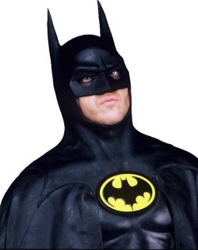

Batman é um dos super-heróis mais icônicos da DC Comics
.
Seu verdadeiro nome é Bruce Wayne, um bilionário e filantropo de Gotham City.
Após testemunhar o assassinato de seus pais na infância,
Bruce jurou combater o crime e a injustiça.
Sem poderes especiais, ele usa sua inteligência, habilidades marciais e tecnologia avançada
para enfrentar vilões como Coringa, Charada e Duas-Caras.
Seu traje sombrio e símbolo de morcego representam o medo que ele infunde em seus inimigos.
Mais do que um herói, Batman é um símbolo de resiliência e determinação.Os filmes do Batman são um marco na história do cinema, adaptando o herói para diferentes gerações e estilos. Abaixo, uma visão geral das adaptações:
Batman (1989) Batman retorna (1992), Batman Forever (1995) e Batman & Robin (1997), de Joel Schumacher, adotaram um estilo mais colorido e exagerado, estrelando Val Kilmer e George Clooney como Batman. 
Com Batman Begins (2005), O Cavaleiro das Trevas (2008) e O Cavaleiro das Trevas Ressurge (2012), Nolan redefiniu o herói em um tom realista e psicológico. Christian Bale interpretou Batman, enquanto Heath Ledger, como Coringa, marcou a história do cinema com sua atuação.
Ben Affleck assumiu o papel de Batman vs Superman: A Origem da Justiça (2016), Esquadrão Suicida (2016) e Liga da Justiça (2017). Seu Batman é mais experiente e amargurado, com foco em grandes eventos do universo compartilhado.
Dirigido por Matt Reeves, The Batman(2022) trouxe Robert Pattinson como uma versão jovem e sombria do herói, explorando suas habilidades como detetive em uma Gotham brutal e corrupta.
Cada adaptação oferece uma visão única do Cavaleiro das Trevas, do herói gótico ao justiceiro realista, refletindo a evolução do personagem
Acesse também minha página sobre os melhores visuais do Batman